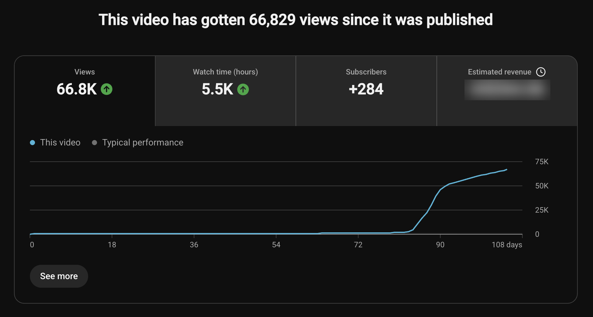
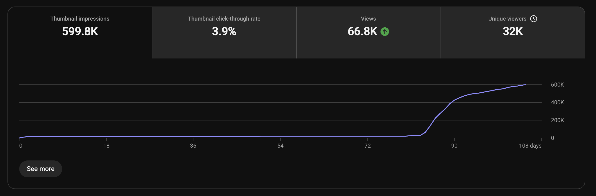
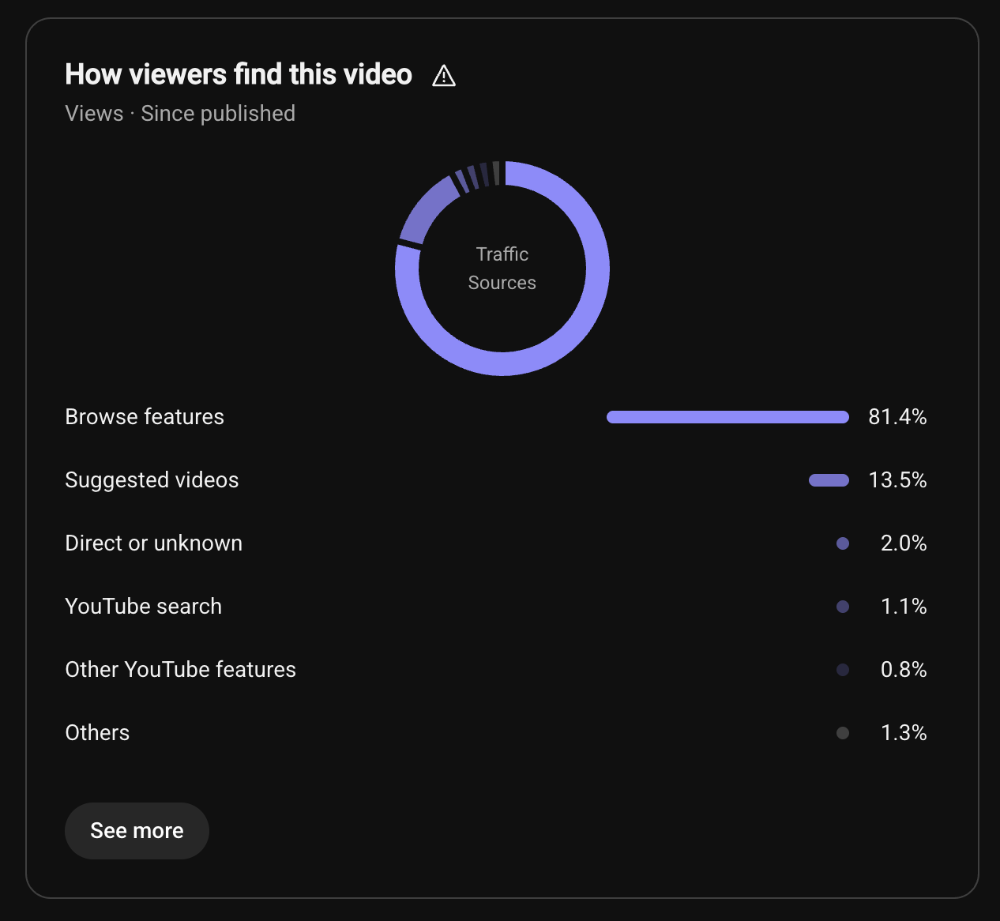
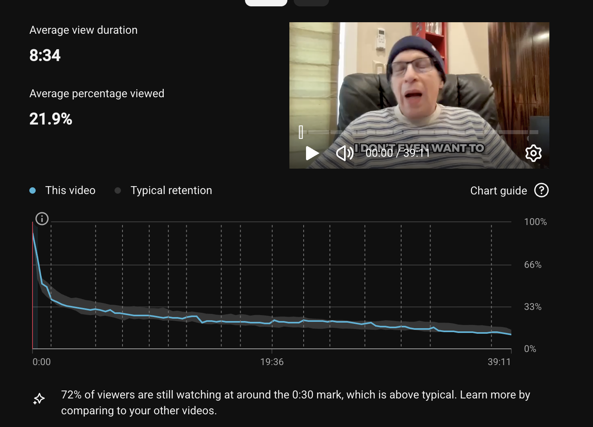

On 2 June we published an episode of Bobby Owsinski's Inner Circle Podcast, and for its first 80 days or so it did very little. Then the daily views climbed to close to a thousand a day, and they are still coming. On 15 September, when these screenshots were taken, the episode sat at 66,829 views, all of them organic. No advertising ran. The episode is The Untold Story of The New Cars ft. Elliot Easton, and you can go and check the view count yourself.
We produce Bobby's show at APodcastGeek (since September 2025), so we have the full YouTube Studio data behind it. This post walks through that data and what it says about the reason your own episodes may be stalling.
The numbers, straight from YouTube Studio

That is 66,829 views, 5.5K hours of watch time and 284 new subscribers from a single upload, plus ad revenue (blurred in the screenshot, our choice), which only exists because the channel was monetised on YouTube months before this episode went out.

599.8K thumbnail impressions at a 3.9 percent click-through rate, and 32K unique viewers. The impressions line has the same shape as the views line, which tells you where the views came from: YouTube decided to show the episode far more often than it had been.

81.4 percent of the views came from browse features. In YouTube's own words, "Home is what your audience sees when they open the YouTube app or visit YouTube.com", and that is where these viewers found the episode. Another 13.5 percent came from suggested videos and 1.1 percent from search. No advertising ran at any point. YouTube put this episode on people's home pages, and they clicked it.
One more figure from Studio that isn't in the screenshots: 98.5 percent of the viewers were not subscribed to the channel. Only 1.5 percent were. Almost everyone who watched this episode had never chosen to follow Bobby's show.

Average view duration of 8 minutes 34 seconds on a 39 minute episode, and 72 percent of viewers still watching at around the 30 second mark, which YouTube itself flags as above typical. Across the channels we run, average percentage viewed on a full-length podcast episode usually lands between 20 and 40 percent. This one is at 21.9 percent, the lower end of that range, and we think the subscriber split explains why. 98.5 percent of these viewers were strangers to the show, arriving from the home page. A stranger samples a 39 minute episode and leaves sooner than a subscriber does, so the wider the reach, the lower the average percentage falls, even while total watch time climbs. YouTube says as much in its own guidance: "Our discovery system uses absolute and relative watch time as signals", and "absolute watch time is more important for longer videos." On a 39 minute episode, 8 minutes 34 seconds of absolute watch time from a cold audience is the figure that counts.
Why your podcast isn't getting views on YouTube
When a podcast episode stalls on YouTube, the recording is almost never the problem. This episode is proof: the same 39 minute conversation went out under three different titles and thumbnails, and only the third one worked. Two things decide which result you get.
The first is whether anyone clicks. YouTube's help pages say the system learns "from whether or not viewers are choosing to watch a video" and selects videos for Home based on "how well your video has interested and satisfied similar viewers". If the people who see the thumbnail don't choose it, YouTube has no reason to show it to anyone else.
The second is whether the people who clicked stay. YouTube says it also watches "how much of the video the viewer watches and if they're satisfied". If viewers leave in the first 30 seconds, the thumbnail said one thing and the video delivered another, and there is no watch time for YouTube to reward.
The Elliot Easton episode cleared both hurdles, and it cleared them on the third attempt at packaging.
The click: title and thumbnail make one promise
The title is "The Untold Story of The New Cars ft. Elliot Easton". It names the band and the guest, and it promises a story people haven't heard. The thumbnail doesn't repeat the title. It puts Elliot's face in front of stage lights and asks "WHAT REALLY HAPPENED?". Title and thumbnail do different jobs, and together they make one promise: there is a version of this story you haven't been told, and this episode is where you hear it.
That promise didn't arrive first time. The episode launched on 2 June with a different title and thumbnail, and they didn't perform. A second version didn't perform either. On 23 June we changed the title and thumbnail to the ones above, and then we left them alone. The views arrived roughly two months after that change.
3.9 percent click-through on 599.8K impressions is a very different result from 3.9 percent on 6,000. YouTube kept showing this thumbnail to people who had never heard of the show (98.5 percent of viewers were not subscribed) and enough of them clicked to keep it going. That only happens when the promise is clear to a stranger.
The first 30 seconds pay the click back
The episode does not open with Bobby. It opens with Elliot Easton, mid-story: "I don't even want to mention the manager's name, but it was insane. It was like he was trying to destroy the band." For the first 29 seconds it is Elliot alone, telling how a shed tour headlining over Blondie turned into a bloodbath for a band nobody had heard of yet. That is the story the thumbnail promised, and the viewer is inside it before they have had a chance to leave.
At 0:29 Bobby's voice comes in: "That's Elliot Easton, lead guitarist for The Cars and one of the most melodic soloists of the New Wave era." That line is the credibility beat. It tells the viewer who they are listening to and why the story is worth their time. A second clip of Elliot follows (five shows played with a snapped collarbone), then at 1:10 Bobby lays out what the episode covers, and only then does he introduce himself and the show. There is no logo sting in the first 30 seconds and no "welcome back". The guest intro hooks, then it earns trust, then it tells you the value, and then the conversation starts.
That structure is deliberate, and it is the one we build into every guest intro we produce. The packaging makes a promise. The guest intro is where the promise gets kept, in the first half minute, before the viewer has decided anything. 72 percent of the people who clicked this episode were still watching at around 30 seconds.
When the opening confirms the click, two things happen. The viewer settles in for the long watch (8 minutes 34 seconds on average here). And YouTube sees people choosing the video and staying, which is what it says it ranks on, so it keeps finding new viewers for it.
The title and thumbnail make a promise. The first 30 seconds are where it gets kept.
Why it took 80 days
Your back catalogue is where this matters. The winning packaging went up on 23 June, and for roughly two months after that the episode still did very little. Nothing else changed in that time.
YouTube says its system "aims to give as many videos as possible a chance to be discovered by audiences who are interested in them", and that it "doesn't promote videos to your audience but rather finds videos for your audience when they visit YouTube". Nothing in that is limited to the first week. An older episode keeps getting chances in front of whoever YouTube thinks might want it that day, and when the right viewers finally saw this one, they clicked and stayed, and YouTube started placing it on home pages at scale.
This is an outlier. On the channels we run, a well-packaged episode usually shows what it can do within a few weeks. Eighty quiet days and then a takeoff this big is rare, and we don't tell clients to expect it. YouTube does say it happens, though. Its performance FAQ has a section called "An old video recently took off, why?" which starts: "It's common for viewers to start showing more interest in old videos." One reason it gives is "more viewers are choosing to watch your video when it's offered to them in recommendations". That is what happened here.
The point for your channel is simple. Get the packaging right early. If the first version isn't working, fix it in the first few weeks, as we did on 23 June. Then leave it alone. YouTube keeps offering old videos to new viewers, so a well-packaged episode can still catch months later.
Book a 30-minute strategy call with APG. We'll look at your channel and tell you exactly where the clicks are leaking.
What one episode did for the channel
The 66,829 views are the headline, but they are the least durable part of the result. The 284 people who subscribed came from an audience that was 98.5 percent strangers, and they are now part of the channel's own audience for every episode that follows. The 5.5K hours of watch time are the signal YouTube says it uses. And because we had already got the channel monetised months earlier, the episode earned ad revenue as it grew.
If you are weighing up whether YouTube is worth the effort for a podcast, that last point is the one to sit with. Monetisation is a threshold you cross once, and after that every episode that catches is income as well as reach. We got there for Bobby before this episode existed, which is why the revenue tile isn't blank.
Five things to check on your own show
Open YouTube Studio on your last five episodes and look at these five things.
- Click-through rate on the thumbnail. If it is falling as impressions rise, the packaging only works on people who already know you.
- Retention at 30 seconds. If your opening is losing viewers before the half-minute mark, it is not paying the click back. Cut the sting and start inside the story.
- Whether the title and thumbnail say the same thing. If they do, one of them is wasted. Give them different jobs.
- Whether the title would mean anything to a stranger. Read it as someone who has never heard of your show or your guest. If the only draw is the guest's name, the promise is missing.
- How old the episode is. A well-packaged episode usually shows itself within a few weeks, so if it's flat after a month, fix the packaging. Don't delete or re-upload it. A good episode can still catch later, as this one did.
This is the work we do before an episode ever gets edited. The recording is the raw material. The title, the thumbnail and the opening decide whether anyone watches it, and the August takeoff gave us 66,829 pieces of evidence for that.
Ready to turn your podcast into a revenue engine?
Book a 30-minute strategy call and we will show you how the APG Brand Builder works for your business.
Book a Strategy Call